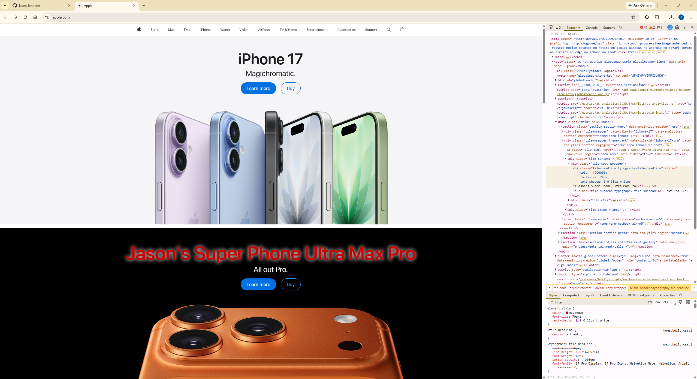

Apple Homepage Dev Tools Vandalism
I used Chrome Developer Tools to temporarily modify Apple's homepage. I changed the iPhone 17 Pro headline to "Jason's Super Phone Ultra Max Pro" and updated the CSS by changing the text color to Texas Tech red, increasing the font size, and adding a text shadow. These changes only existed in my browser and disappeared after refreshing the page.

What I "Vandalized"
For this exercise I modified Apple's homepage using Chrome Developer Tools. I changed the main product headline from "iPhone 17 Pro" to "Jason's Super Phone Ultra Max Pro." I also modified the CSS by changing the text color to Texas Tech red (#CC0000), increasing the font size to 70px, and adding a white text shadow. This exercise helped me understand how HTML and CSS can be edited live in the browser without changing the actual website.